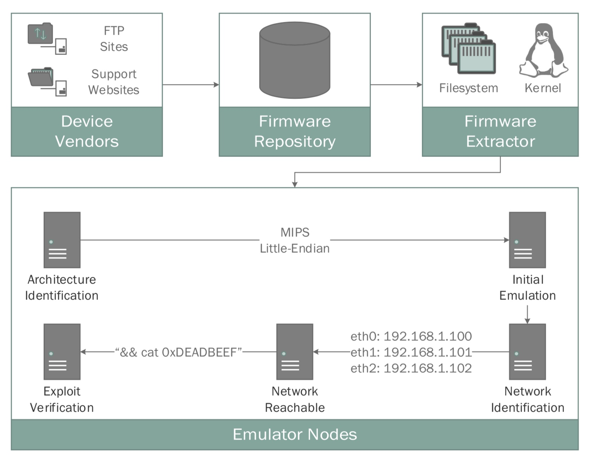

论文出处 ：NDSS
时间:2016
解决了嵌入式设备面临的众多挑战，例如各种硬件专用外设的存在，非易失性存储器（NVRAM）中持久性配置的存储以及动态生成的配置文件。
由于这些提取的固件大部分都是基于Linux的，因此我们最初通过预编译修改后的Linux内核来专注于对基于Linux的固件的支持。
但是，即使使用完整系统仿真，也必须正确配置仿真环境以与来宾固件的网络接口进行交互。
II. OVERVIEW
在本节中，我们将描述构成FIRMADYNE的各种组件的设计，以及我们对这种架构设计的动机。

我们讨论了完整系统仿真的动态分析这种分析的潜在优势点选择，说明了挑战和缺点，并论证了为什么基于完整系统仿真的动态分析是应对这一挑战的最有希望的方法。
多个固件映像使用的alphafs Web服务器在访问NVRAM之前验证与硬件相关的产品和供应商ID。 如果在预定的物理内存地址中不存在这些值，则Web服务器将停止操作并以错误消息终止。 为此，Web服务器使用mmap（）系统调用通过/ dev / mem访问内存，并检查支持的EEPROM芯片的ProductID和VendorID的特定偏移量。
许多固件映像在启动时为易失性数据安装临时内存支持的文件系统。 此文件系统是动态安装和生成的。 因此，目录/ dev /和/ etc /可能是临时文件系统中子目录的符号链接，因此在静态检查时会出现断开。
我们将现有内核替换为我们为仿真环境专门设计和检测的修改内核。使用原始文件系统上的init和rcS二进制文件提供的系统引导顺序，我们能够将用户空间初始化为与原始设备一致的状态。
III. CONCEPT
IV. IMPLEMENTATION
A. Acquisition
自定义网络爬虫是使用Scrapy框架开发的，我们的数据集中为42个供应商中的每个供应商编写了一个单独的蜘蛛。
B. Extraction
C. Emulation
1)NVRAM
NVRAM：从粗略检查中，至少52.6％的所有提取的固件映像（9,486中的4,992个）使用名为libnvram.so的共享库访问硬件非易失性存储器（NVRAM），以保留特定于设备的配置参数。
由于此外设通常被抽象为键值存储，因此我们开发了一个自定义用户空间库，用于拦截对NVRAM相关函数的调用，例如const char * nvram_get（const char * key）和int nvram_set（const char * key，char） * val），分别用于从NVRAM获取和设置参数。 通过将内核传递的系统环境修改为init二进制文件以通过LD_PRELOAD包含此库，我们确保所有用户空间进程都继承相同的环境，因为它们是init的子进程。 文件系统上的临时挂载点用作键值存储的根，允许我们在用户空间中重新实现此接口，而无需模拟特定于硬件的外围设备。
我们遇到的一个常见挑战是我们的固件映像数据集是使用不同的C工具链编译的，其中一些工具链是我们无法访问的。 如§VA所示，这种多样性对于我们的共享库是有问题的，因为所有动态加载的ELF二进制文件必须指定编译它们的动态加载器的路径，以及动态加载的依赖项的文件名，这些是不同的 取决于系统。
简单地返回NULL或空字符串也是不够的，因为这最终会导致系统在启动时崩溃或进入错误状态，例如，通过在NULL指针上调用itoa（）或strcpy（），或者向程序插入错误的参数 调用，如ifconfig。
在手动检查无法模拟的固件映像后，我们意识到大多数映像将一组默认NVRAM值嵌入到几个常见位置，例如，在名为/etc/nvram.default,/etc/nvram.conf的文本文件中，或者/var/etc/nvram.default。
2) Kernel
在内核编译过程中，我们在自定义Linux内核模块中实现分析，该模块用于帮助调试和模拟原始系统环境。通过使用内核动态探测器（kprobes）框架挂钩20个系统调用，我们能够拦截改变执行环境的调用。这包括分配MAC地址，创建网桥，重新启动系统和执行程序等操作，所有这些操作都由我们的框架监控，以正确配置模拟的网络环境。
由于某些固件映像需要在引导时安装某些文件系统，例如/ dev或/ proc，因此我们使用rdinit内核参数来运行自定义脚本，该脚本在执行init之前初始化这些文件系统。 此外，我们在启动时加载nandsim内核模块，模拟通过/ dev / mtdX访问的内存技术设备（MTD）分区，这些分区经常在这些嵌入式设备上使用。
3) System Configuration
由于我们主要对实现网络功能的固件感兴趣，例如路由器，网络附加存储或监视设备，因此我们需要对模拟硬件进行特定于设备的更改。
我们收集有关预期网络配置的信息。 特别是，我们会跟踪分配给网络接口的IP地址，以及用于聚合多个网络接口的IEEE 802.1d网桥的存在。 此外，我们使用IEEE 802.1Q VLAN检查以太网帧的标记和分离，一些路由器使用这些VLAN来将无线访客网络与物理网络隔离。
我们在主机上实例化网络抽头（TAP）设备，其与固件内的模拟网络接口之一（例如，eth0）相关联，其对应于LAN接口。 对于使用VLAN的固件映像，我们为TAP接口分配相应的VLAN ID，以便与模拟网络服务成功通信。 接下来，TAP接口配置有IP地址，该IP地址与固件分配给仿真接口的IP地址位于同一子网中。
4) QEMU
除了NVRAM之外，我们希望嵌入式系统依赖于其他硬件专用外设，如看门狗定时器或其他闪存设备。 遗憾的是，一些设备制造商并未遵循良好的软件工程实践，而是直接在用户空间中实现此类功能，而不是在内核空间中使用设备驱动程序。
alphafs webserver将/ dev / mem设备节点中的部分物理内存直接映射到自己的地址空间。 它希望闪存芯片的配置信息映射到0x1e000000，VendorID和ProductID识别参数与软件支持的芯片相匹配; 否则它只是终止。
为了支持FIRMA-DYNE中受影响的138个固件映像，我们在QEMU的源代码中修改了适当的16个字节，以便模拟平台闪存设备响应已知的良好值。
D. Automated Analyses
1) Accessible Webpages
遍历从固件解包出来的资源文件，（排除js,css,png等），动态去访问看是否存在未授权访问或信息泄露等漏洞。
2) SNMP Information
3) Vulnerabilities
检测已知漏洞
E. Additional Capabilities
我们还开发了许多其他功能，以帮助开发和调试我们的仿真框架和漏洞。 其中包括动态跟踪代码执行，可以将其导入到现有的逆向工程工具中，例如IDA Pro。 我们修改了自定义内核以禁用context_switch（）函数的内联，这允许模拟器跟踪给定用户空间进程的执行。 此外，在启动时，我们还在设备节点/ dev / ttyS1上启动一个特殊的控制台应用程序，该应用程序由QEMU转发到主机系统上的临时套接字。 这为我们提供了一种在运行时修改模拟固件映像的便捷机制，尤其是在没有启动默认控制台的情况下。
V. EVALUATION
A. Statistics
1）Architectures
对于具有提取的根文件系统的所有固件映像，我们能够通过检查系统上busybox二进制文件的格式标题来识别相应固件映像的体系结构，或者/ sbin /中的二进制文件
2) Operating Systems
48% linux，%3.5 vxworks
3) Kernel Modules
4) Network Services
5) Emulation Progress
在我们确定了架构的8,617个已提取的固件映像中，我们的系统最初成功模拟了96.6％（8,591）。
在进入“学习”阶段的8,591个固件映像中，只有32.3％（2,797）的网络配置成功推断。我们认为这种减少是由于在尝试推断网络配置时引导过程失败而发生的。正如我们之前在§IV-C1的最后一段中所讨论的那样，NVRAM仿真的问题是这些故障的重要原因。例如，如果我们的NVRAM实现无法覆盖内置实现，如果我们的实现加载的默认NVRAM值不足，或者内置NVRAM实现期望NVRAM具有不同的语义，则某些路由器可能无法正确初始化相关功能。这些在引导过程中表现为各种崩溃或挂起，特别是如果内存或字符串操作函数（memcpy（），strcpy（）等）被我们的NVRAM实现为不存在的键返回的NULL值调用。此外，某些图像也可能不使用NVRAM硬件外设，而是将配置值直接写入MTD分区，我们可能无法成功模拟。
其他潜在的网络故障源包括网络设备的不同命名约定。 例如，使用Atheros或Ralink芯片组的设备可能希望平台网络设备的命名分别类似于ath0或ra0，而不是通用eth0。 同样地，其他设备可能期望存在诸如wlan0的无线网络接口，否则将失败。 此外，由于我们的ARM little-endian仿真平台目前仅支持最多一个仿真以太网设备，这可能会阻止某些固件映像正确配置网络。
具有推断网络配置的2,797个图像中只有70.8％（1,971）实际上可以使用ping从网络到达。 这可能是由模拟来宾上的防火墙规则引起的，这些规则会过滤ICMP回应请求，从而导致漏报或各种其他网络配置问题。 例如，我们的系统可能错误地将QEMU中的主机TAP接口分配给模拟设备的WAN接口而不是LAN接口，或者识别WAN接口的默认IP地址而不是LAN接口。 同样，固件可能会在引导后更改模拟网络设备的MAC地址，从而导致过时的ARP缓存条目和看似无法访问的计算机。
B. Results
信息泄露（＃207，＃209 - ＃214）：使用自动化网页分析，我们还在数据集中发现了七个新的信息泄露漏洞，这些漏洞影响了D-Link和Netgear制造的各种路由器的51个固件映像。 其中一个（＃207）位于未受保护的网页内，该网页提供路由器的诊断信息，包括所有本地广播无线网络的WPS PIN和密码短语。
C. Discussion and Limitations
额外的手动操作可以通过例如修复提取失败，添加对其他硬件架构的支持或纠正仿真失败来改进系统。 这些更改要求分析人员根据原因手动对故障进行分类，并执行增加兼容性所需的更改。
VII. CONCLUSION & FUTURE WORK
我们数据集中嵌入式固件的第二大类（Linux之后）来自各种专有的实时操作系统（RTOS），如VxWorks。 这为未来的工作提供了一个潜在的途径，特别是考虑到存在影响这些平台的已发布漏洞。 特别是，我们有兴趣在我们的仿真平台上使用现有的实时Linux开发框架（如Xenomai）为这些应用程序开发兼容层。